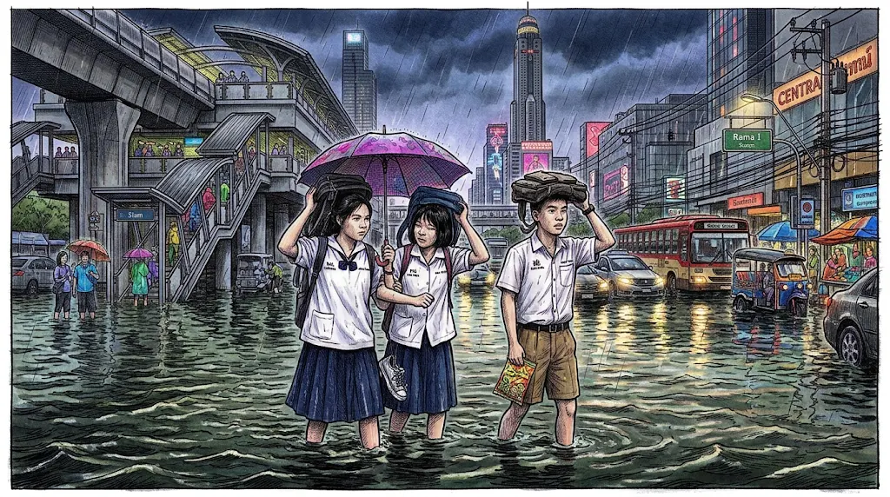

Labor Omnia Vincit. What does it mean?
Hard work conquers everything.

Let's listen and discuss.
How much knowledge of the world do you have?
Assumption College Thonburi
Labor Omnia Vincit. What does it mean?
Hard work conquers everything.
I agree that hard work is important. But I think this one matters more.
Scientia Omnia Vincit
Knowledge overcomes all.
The question So, Pheem. Well done on your amazing university results. We're so happy to interview you for this regional policy position at the United Nations. To get started, can you tell us about Thailand's current refugee policy on the Thai-Burma border?
Interview one
Pheem: The refugee policy? Thailand? Um, um, I know this is a problem.
Interview two
Pheem: Thailand has not signed the 1951 Refugee Convention, so there is no refugee law here. The government calls the border camps temporary shelters. More than 90,000 people live in nine of them, mostly Karen and Karenni from Myanmar. They need permission to leave the camps, and some have lived there since the 1980s. UNHCR can visit, but Thailand decides who may stay.
It is important that you have a good knowledge of the things that are happening in the world. Why? Think of two reasons.
Every Monday, from now on, you will start the class with a short quiz: five questions about current events.
Three will be the top world stories. Two will be the top stories in Thailand.
The winner and the most improved at the end of the term will each get a cool prize, like a family pizza or a huge Swensen's sundae.
You will be competing against all five classes I teach: M2-4A, M2-5A, M3-3A, M3-4A and M3-5A.
Are you ready? Our first quiz will begin in a moment.
You will have 25 seconds to answer each question. I will mark every answer and publish a leaderboard.
Question 1 of 5
25
Question 2 of 5
25
Question 3 of 5
25
Question 4 of 5
25
Question 5 of 5
25
Build some background knowledge.
Learn some new words.
Extend our knowledge through listening.
Learn how to use this new knowledge when we speak.
The number of people who live on land that could be flooded in 2030, in millions:
Ten and a half million people: more than the other six cities put together.
What does this show — and what does it not show?
Greenpeace East Asia (2021) · 10-year coastal flood, high-emissions scenario
Red is land at risk from an annual flood in 2030.
Climate Central, Coastal Risk Finder · annual flood in 2030 · pledged-emissions scenario · open full screen
The 2011 floods, the worst in fifty years:
$46.5 bn
Total damage and losses — 1.43 trillion baht.
13.6 million
People affected. More than 680 lives were lost.
$15 bn
Insured — still the costliest flood the insurance industry has ever paid for.
The same flood is becoming more frequent: what was a 1-in-50-year flood in 2008 becomes a 1-in-15-year flood by 2050.
World Bank (2012); Swiss Re (2021); World Bank (2010). 2011 prices.
Say it
/ˈvʌlnərəbl/
Spell it
vulnerable adjective
Use it
These houses are old and close to the river. In a flood, they are very vulnerable.
Say it
/ˈdeltə/
Spell it
delta noun
See it
Say it
/ˈɪəmɑːk/
Spell it
earmark verb
Use it
Nobody has spent the money yet. The government has earmarked 500 million baht for the flood victims.
Say it
/ˈmæŋɡrəʊv/
Spell it
mangrove noun
See it
Say it
/ˈwetlənd/
Spell it
wetland noun
See it
It is about Bangkok's ความเปราะบาง — its vulnerability — to flooding.
We will watch it in three parts.
If you are not a confident listener, follow along with the transcript. This is a B1+ recording.
Part 1 · 0:00–1:58
In your notebook
Copy the linear notes into your notebook.
Some lines are already written in Part 1. As you watch, fill in the blanks.
No subtitles. You will listen to this part once.
With your partner
Compare what you wrote.
If you need extra support, read the transcript to fill the blanks.
Reasons for BKK's vulnerability
Reasons for BKK's vulnerability, continued
Solutions
Part 2 · 2:02–4:00
The second part is about the ideas that have been tried, and rejected.
In your notebook
Copy the mind map into your notebook.
Fill in the blank ovals as you watch.
With your partner
Compare what you wrote.
If you need extra support, read the transcript.
Climate change: country v city
We will listen to the final part, but this time you will make your own notes.
Ready? We will play this part twice.
Part 3 · 4:02–5:20 · two plays
With your partner
Compare what you wrote.
If you need extra support, read the transcript.
Solutions
Solutions, continued
But
In your notebook
Write a short summary of the report.
You will use this in a taped discussion.
1 The city is only about two metres above the sea, and most of its canals are filled in, so heavy rain floods the streets and costs the government millions.
2 Bangkok has built dozens of pumping stations, and it is now trying mangroves, artificial trees and wetland parks that hold the rain.
3 They are not enough. The city is also sinking and a sea wall was rejected as too expensive, so these ideas can only delay the flooding.
Compare it with your own paragraph.